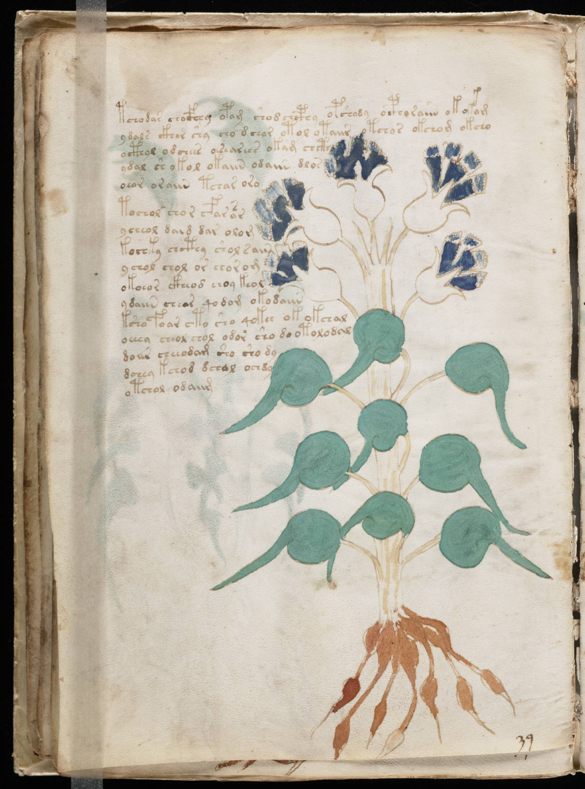

f24v
1tchodar chocfhhg opom shod chcphy opshody ocphoraiin okokom2ydals ckhor shy cho dchar otol otaiir otchos okchom okcho3octhol odchees oesearees okam chcth4ydal sh okol okaiin odaiin dlos5oeor oraiin tchar oro6tochol chor cfarasr7ycheol daid dar olom8kochky chcthy shol sain9ychol chol or chorom10okoeos ckheod choy keol11ydaiin cheor qodom okodaiin12ksho foar cto sho qokch okokchal13oeeey cheol chol odor sho do otolodal14doiir cheekdam sho sho dy15dchey kchod dchol ochdy16otchol odaiim
